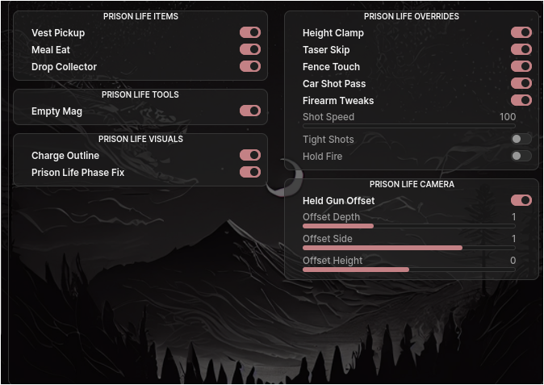
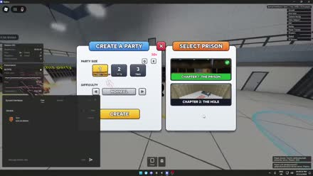
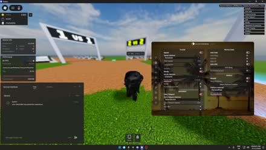
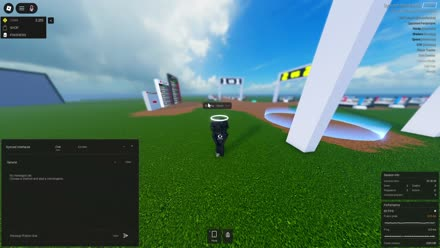
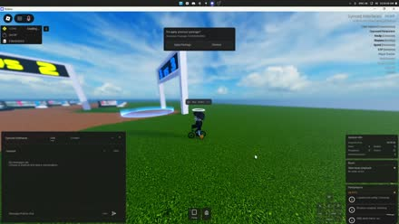
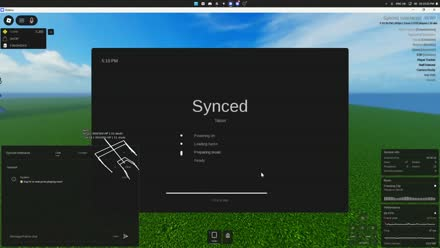
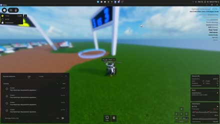

Synced Interfaces
The script behind everything in my alts.
Feature List
Home
- WalkSpeed, Jump Power, fly (aura, superman, vehicle, CFrame, velocity, impulse), click teleport, spin bot, spider
- Invisible, noclip, airwalk (platform material and speed)
- Humanoid spoofer
- Movement guard, anti-teleport, anti-bang, anti-fling, anti-void, anti-sit, anti-AFK
- Custom chat interface with themed bubble chat and a text size forcer
Players
- Aim assist, silent aim, auto clicker, trigger bot
- Target select, nearest, click select, view, stare, goto, loop goto, strafe
- Emote sync, steal emote ID
- Attach: stand, piggyback, shoulder, backpack, headsit, facesit
- Target info for the selected player, with health, distance, and keep visible
Environment
- ESP: box, name, distance, health, snaplines, chams, true sight, team check, presets
- Fullbright, fog, time lock, shadows, x-ray, shaders, skybox changer, flashlight, global illumination
- Bloom, saturation, exposure, depth of field, motion blur, reflections
- Remove rain, mute rain audio, hide rain debris, strip storm grading
- FOV, no zoom limit, camera noclip, crosshair, freecam
Server
- Rejoin, server hop (min free, min and max players, skip full), server browser
- Auto rejoin and auto-hop on staff
- Staff detector server hop
- Session info as a thin top bar
Utilities
- Emotes: search, play by ID, freeze, speed, quick slots, UGC bundles
- Inventory with 10 pinned hotbar slots
- Staff detector, player tracker, performance monitor as a thin top bar
- Reset character, headbang and back bang
Interface
- Accent colour, array list (boxed rows, side), watermark (username, display name, game, ping, fps, players, place and job id, account age, user id, time)
- Notifications (side, time, up to 6 on screen), voice bubbles and who's speaking, head halo
- Menu key, one keybind per module, reset overlay positions, unload
- HUD panels dock above the chat window, Lucide icons across the UI
- Settings under a toggle stay hidden until it is on
Config
- Save, load, duplicate, delete and refresh configs
- Auto load last config
Phone
- PIN lock
- Music (Spotify and local files, playlists)
- Waypoints, calculator
- Battery, eco mode, charger
- Custom wallpapers (links and files)
- Dock the phone in an inventory hotbar slot
Games
- Shadow Boxing Battles (SBB): alt auto win farming, ring teleport and refresh, ring color tinting with restore, auto move solver, opponent perspective, hit spoofer, hide testing sign, sleek menu
- Prison Life: phase fix, vest pickup, meal eat, drop collector, empty mag, charge outline, height clamp, taser skip, car shot pass, fence touch, held gun offset, firearm tweaks
- Punch to Escape lobby shop, class, bags, and solo start
- Punch to Escape prison auto punch, collect, sell, belts, machines, revive, escape, and cell search
Command bar
- Press ; in game to open or hide the command bar
- Tab autocompletes and the arrow keys walk the history
- Runs alt commands by typing them instead of clicking
Alt control
Formations
- Line, pyramid, mosaic, draw, text, tag
- Conga, and double conga (two lines instead of one)
- Orbit, air orbit, sphere, atom
- Forms: snake, spider, frog, car, helicopter, plane, mech, tank, scorpion, robots, bee, house, jet, scat pack, boat, dragon, train, ufo, centipede, crab, bike
Movement
- Summon, goto, scatter, spin, jump, jump wave
- Chase, tailgate, intercept, pace, escort, bodyguard
- Surfboard, throne
Attach and actions
- Headsit, multi headsit, facesit, stack, backpack, piggyback, shoulder
- Emote sync
- Head bang, back bang, anti-bang
- Fight club, race
Client
- Mute audio, noclip, anti-fling, airwalk, invisible
- Client-sided hide players
- FPS cap, graphics, render distance, 3D render, anti-lag
- Leave voice chat
- Reset, rejoin, exit, auto rejoin, stop all
- Body colour changer through the account manager
Changelog
November 9thLatest
Added
- Shape presets in the draw pad: circle, heart, star, diamond, triangle, square, cross, arrow, zigzag, wave, spiral, infinity.
- Redo in the draw pad next to undo.
- Website at syncedinterfaces.github.io with the feature list and full changelog, updated on every deploy.
- Alt reset (-re) now returns the alt to the spot where it died.
- Shadow Boxing Battles (SBB): ring teleport with refresh, and client-side ring color tinting with restore.
Changed
- Freehand strokes are smoothed while drawing.
- Draw pad layout refreshed: shape grid, tool row, and header.
- Circle jerk orbits at a minimum radius of 3 and matches the emote's playback speed exactly.
Removed
- Bot Wars (-botwars / -unbotwars), the carry-and-shoot alt action.
November 8th
Added
- Prison Life: vest pickup, meal eat, drop collector, empty mag, charge outline, height clamp, taser skip, car shot pass, fence touch, held gun offset, and firearm tweaks.
- Reflections toggle next to depth of field, global illumination, and motion blur.
- Chat text size forcer so games cannot send oversized rich text.
Changed
- Session info and performance sit in a thin bar at the top center, with a short animation when a value changes.
- Shader presets use softer light, matching fog, and night clouds.
- Who's speaking rows are taller, and a second speaker no longer clips into the custom chat interface.
- Target info only shows the selected player.
Fixed
- Target player dropdown no longer starts with a name selected.
- Selecting a target no longer turns the local character around.
- Selected player names clipping in the target panel.
- Performance ping reading the wrong network stat.

November 8th update preview
November 7th, continued
Added
- Punch to Escape lobby: commissary, class spin, bags, settings, solo start, and leave squad.
- Punch to Escape prison: auto punch, auto collect, auto sell when the bag is full, belts, machines, revive, and escape.
- Cell search moves you into the cell with 3 seconds left, then places back when it ends.
Changed
- Auto collect sends one full claim of nearby rubble about every tenth of a second.
- Experiences controls use separate group boxes instead of one long list.
Fixed
- Interface config now saves menu settings, including the watermark dropdown and more.

November 7th (continued) update preview
November 7th
Added
- Discord tab to copy or post changelogs and the feature list.
- Command bar (`;`) with autocomplete and history.
- Phone now can be pinned to an inventory hotbar slot.
- Session info, performance, and who's speaking show above the custom chat interface.
- Lucide icons, tab names on hover, and name/version at the top of the menu.
- Custom background images in Interface settings.
- Some settings stay hidden until their toggle is on.
Changed
- Full UI rewrite with a new layout and cleaner look.
- Settings moved into Interface, and configs moved to the Config tab.
- Menu can be dragged from the top bar and the sidebar is cleaner.
- Notifications are limited to 6.
Removed
- Fling features.
- Localhost website.
- Custom cursor, reset mouse, and tooltips.
- Array list rainbow, UI blur, UI scale, and reset layout.
- Ctrl+T theme panel and theme creator.
Fixed
- Menu or camera getting stuck after closing with shift lock off.
- Background image not coming back after reloading.
- Rows hiding wrong or overlapping in some places.
- A hotkey opening the phone and menu at the same time.
- Phone seek slider and webhook input clipping.
- Discord tab startup crash.

November 7th update preview
November 4th
Added
- Localhost website. Commands are selected and run from the site instead of the in-game command bar.
- Startup page with the main account headshot and a connection checklist.
- Feature List tab. The list can be edited and saved, then posted to Discord as an embed.
- Home page command field, category shortcuts, and the latest changelog entry.
- Session page with recent relay checks, latency, and the last check time.
- Command notifications on the site, plus a notice when the relay goes up or down.
- Discord icon in the site header.
- Changelog dates can be filtered. Posting a date updates that date's Discord message.
Changed
- Replaced the in-game command bar and command list with the localhost website.
- Home page rebuilt around running commands and the latest changelog.
- Body color command renamed from -torsocolor to -bodycolor.
- Form shapes now run through -form.
- Site typeface set to Math Sans Bold.
- Site icon replaced with a heavier S mark.
- Syntax check updated to Luau 0.745.
Removed
- In-game command bar.
- In-game command list.
- Copy and Save on the command site.
- Settings button and the startup note.
Fixed
- Relay now drops alts that stop responding, so a disconnected alt is no longer shown as connected.
- Relay acknowledgements, combined main and alt stop, and persistent retries no longer confirm an older command run.
- Pressing / no longer opens Controls from other pages.
November 3rd
Added
- Ctrl+T opens an appearance panel with the theme list, preview, and search.
- Themes include Dark, Light, Midnight, Abyss, Porcelain, Windows 7, Catppuccin Mocha, OLED Black, Nord, Rose Pine, Gruvbox, Tokyo Night, Dracula, Everforest, Solarized Dark, Ayu Mirage, and Classic Windows.
- Accent hue, color presets, Lock accent, and Theme creator moved into the panel.
Changed
- Hovering a theme updates the preview. Open and close have a short fade.
- Dark themes with a white text accent use an outline button instead of a filled white one.
- Attach cleanup resets the local character the same way as other actions.
Removed
- Halloween, Christmas, Winter, and Auto Seasonal theme changer.
- Browse themes button and the Interface Theme dropdown.
- Music Visualiser, including the Spotify visualiser helper.
- SoundCloud, including the phone app, music source, and audio helper.
Fixed
- Ctrl+T not closing the panel, including while search was focused.
- Panel opening with the menu closed, or staying open after the menu closed.
- Clicking the preview closing the panel.
- Using this theme was hard to read on light themes.
- Theme list covering the panel's rounded corners.
- Search focusing itself when the panel opened.
- Accent dots and the Lock accent / Theme creator buttons missing their background.
- Alt commands such as -bp failing after Bot Wars was added, because stopping actions called Bot Wars before that action was loaded.
- Bundled action loader missing Bot Wars, so the module never registered on a normal load.
- One bad action module stopping the rest of the action list from loading.

November 3rd update preview
November 2nd
Added
- Replaced the tablet with a phone, including lock screen, home screen, and apps.
- Lock screen and home screen wallpapers, selectable from a file or link in Settings.
- Settings for wallpaper, PIN, battery, music, and about phone.
- Notifications show on the phone.
- Bottom navigation bar with back, home, and open apps. Swiping up closes the current app.
- Calculator app built into the phone.
- Waypoint compass showing direction and distance to the selected place.
Changed
- Phone is smaller on screen.
- Lock screen text is larger.
- Charger changed to a thin USB-C cable with a short plug and white wall brick.
- Category windows line up with the sidebar and pack from left to right.
- Sub-tabs stay on one line with full names visible.
- Enabled toggles no longer have a tinted row background.
Removed
- Keystrokes.
- Suspected exploiter checks, which were causing major performance drops.

November 2nd update preview
November 1st
Added
- Stronger scatter edge and void checks to keep alts on the map.
- -stack / -unstack to stack alts on a target's head.
- -facesit / -unfacesit to sit alts on a player's face.
- -form crab and -form bike.
- Rebuilt centipede so the body and legs look like one connected form.
- Taller -form mech.
Fixed
- -unbp / -unheadsit failing or glitching after alts had been sitting idle.
- Attach cleanup not working properly when airwalk was involved.
- Missed -un commands after a quiet stretch.
- Scatter launching alts, sticking them on airwalk plates, or freezing them.
- Airwalk reactivating after scatter or leaving floating plates behind.
- Crab, bike, and centipede facing the wrong way or falling apart while walking.
- Crab's back legs starting behind the shell.
- Bike wheels sitting below the ground.
- Mech feet not reaching the ground.
- -line and -sync placing two alts in the same spot.
- -stop missing alts after a command had been running for a while.

November 1st update preview
October 31st
Added
- Drawing pad in Alt Control. The drawing appears in-game when forming alts, and still has a few bugs.
- Rebuilt tablet home screen with an app grid, now playing panel, and playback controls.
- Shared control center for Wi-Fi and battery.
- Slower battery drain and charging. The tablet powers off at 0% until plugged in.
- PIN entry works with both the number row and the numpad.
Fixed
- Alt Control reliability when alts join, leave, or respawn mid-action.
- Group actions staying in sync with late alts and persistent command retries.
- Emergency stop and attach cleanup standing alts up after seated or attached actions.
- Relay delivery and missed-alt retries using the correct action timing.
- Notifications, anti-sit restore, and shutdown edge cases leaving actions running.
- Tablet startup screen and PIN page cleanup.

October 31st update preview
October 30th
Added
- New features and UI improvements.
Fixed
- Various bugs, performance issues, and reliability problems.
- General polish across existing features.